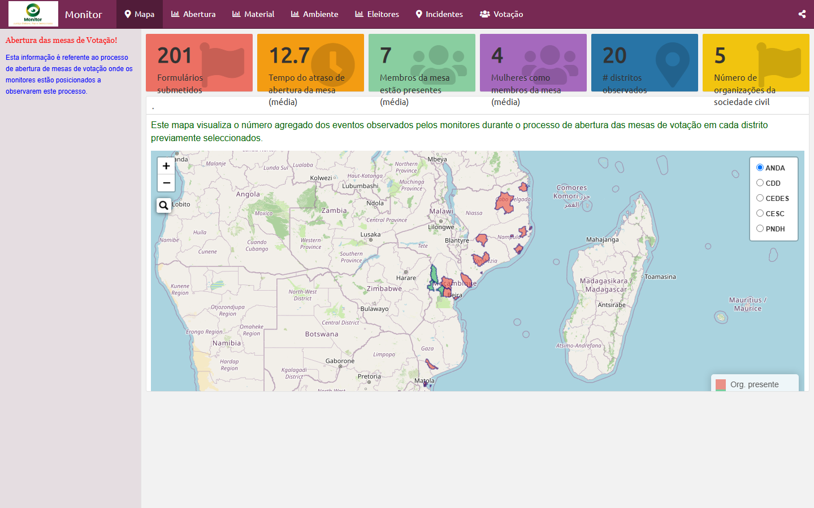
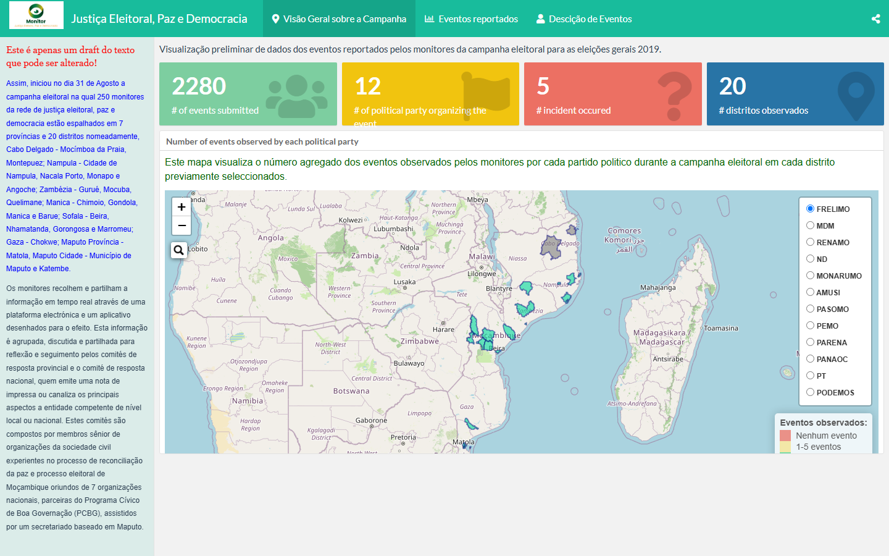

Justiça Eleitoral2019
Campaign Monitor
Election campaign events tracked by monitors — incidents by political party, mapped across Mozambique.
Open dashboardI'm Antonio Rungo — biostatistician and Senior Strategic Information Advisor at mothers2mothers, turning HIV/PMTCT data into clear, interactive stories.
Interactive election-monitoring reports — swipe through and open any one full-screen.
Election campaign events tracked by monitors — incidents by political party, mapped across Mozambique.
Open dashboard
Timeliness of opening, presence of observers and party agents per district on election day.
Open dashboard
Over 2,280 observation events aggregated by district across the country during the vote.
Open dashboard